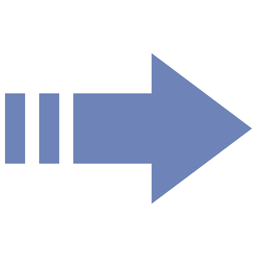

Migrando para TI com bagagem externa, mente analítica e foco em fundamentos, estrutura e boas práticas. Tecnólogo em Análise e Desenvolvimento de Sistemas pela UNIP.
PERFIL
FORMAÇÃO
Graduação
2022-2024 (concluído)
Análise e Desenvolvimento de Sistemas
Universidade Paulista - UNIP

Base sólida para projetar, desenvolver e manter sistemas de informação, além de capacitar para liderar equipes, diagnosticar problemas e propor melhorias. A grade enfatizou o uso de boas práticas, métodos e técnicas na construção de software com foco em qualidade e eficiência.
CURSOS
Atualização
Concluído em Julho de 2025, 15 horas de duração
Git e GitHub
FGV Online
Participação em curso online autoinstrucional sobre Git, GitHub e GitFlow.
Curso
Concluído em Julho de 2025, 4 horas de duração
Competências Essenciais para a Carreira em Administração de Sistemas
Microsoft e LinkedIn
Fundamentos da administração de sistemas: ambientes, segurança e ferramentas.
PROJETOS
GitHub
Repositório do Próprio Site
O site foi desenvolvido utilizando HTML, CSS e JavaScript, e está disponível no Link: GitHub
CONTATO
(019) 99357-7886
matheusbcanato@gmail.com